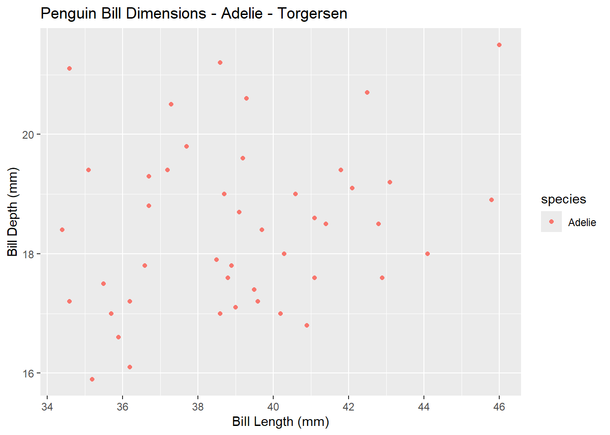
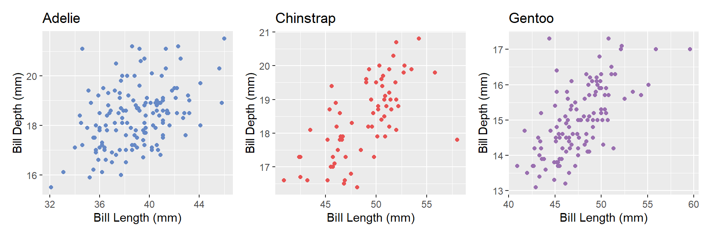

species island bill_length_mm bill_depth_mm
Length:342 Length:342 Min. :32.10 Min. :13.10
Class :character Class :character 1st Qu.:39.27 1st Qu.:15.57
Mode :character Mode :character Median :44.50 Median :17.30
Mean :43.96 Mean :17.14
3rd Qu.:48.50 3rd Qu.:18.70
Max. :59.60 Max. :21.50
NA's :2 NA's :2
flipper_length_mm body_mass_g sex year
Min. :172.0 Min. :2700 Length:342 Min. :2007
1st Qu.:190.0 1st Qu.:3550 Class :character 1st Qu.:2007
Median :197.0 Median :4050 Mode :character Median :2008
Mean :201.0 Mean :4203 Mean :2008
3rd Qu.:213.2 3rd Qu.:4756 3rd Qu.:2009
Max. :231.0 Max. :6300 Max. :2009
NA's :2 NA's :2
Code
# Calculating mean bill length for different species and islands using dplyrdata %>%filter(species =="Adelie") %>%group_by(island) %>%summarize(mean_bill_length =round(mean(bill_length_mm, na.rm =TRUE), 2))
# A tibble: 3 × 2
island mean_bill_length
<chr> <dbl>
1 Biscoe 39.0
2 Dream 38.5
3 Torgersen 39.0
3 R-Code zur mittleren Schnabellänge und mittleren Schnabeldicke
# A tibble: 3 × 2
species average_bill_length
<chr> <dbl>
1 Adelie 38.8
2 Chinstrap 48.8
3 Gentoo 47.5
# A tibble: 3 × 2
species average_bill_depth
<chr> <dbl>
1 Adelie 18.3
2 Chinstrap 18.4
3 Gentoo 15.0
4 R-Code für das Erzeugen des Streuungsdiagramms
Code
# Use the function in functions.Rcreate_scatterplot(data, "Adelie", "Torgersen")

in# R-Code für 3 Scatterplots nach den 3 Pinguinarten
Code
# Use the function in functions.Rp1 <-create_scatterplot2(data, "Adelie", "#6689c6")p2 <-create_scatterplot2(data, "Chinstrap", "#e85252")p3 <-create_scatterplot2(data, "Gentoo", "#9a6fb0")p1 + p2 + p3

There is actually a positive correlation when split by species.